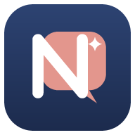
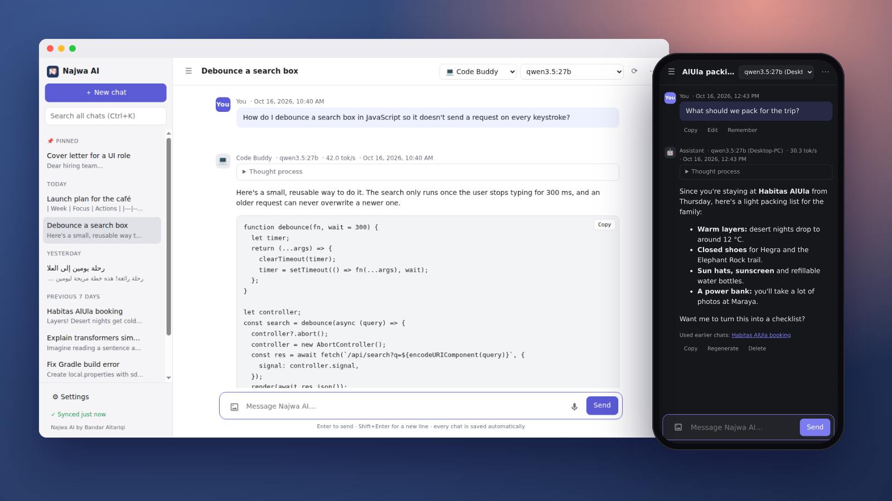
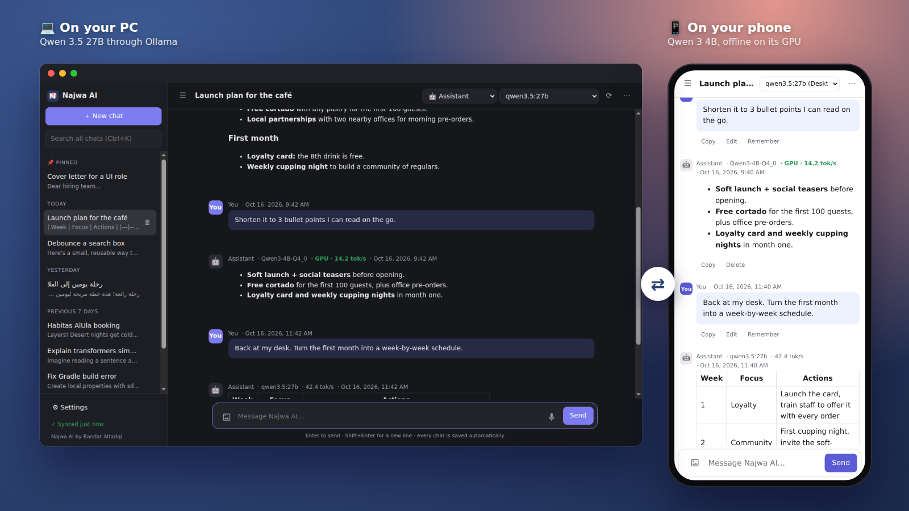
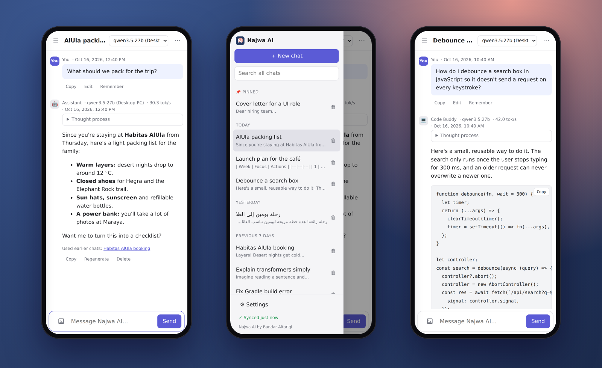
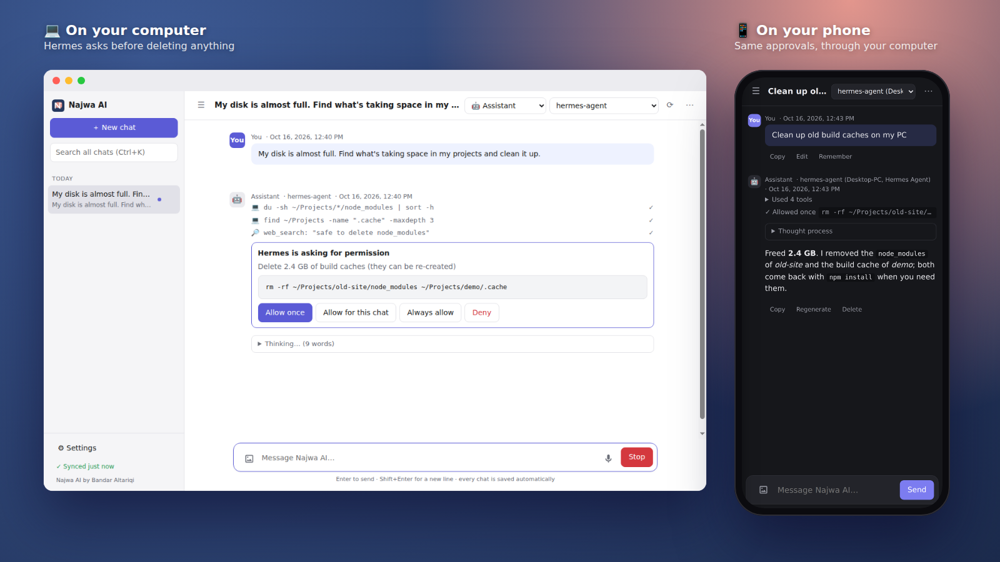

Najwa AIby Bandar Altariqi
A private AI chat app that keeps the same conversation on your phone and your computer, even when each one uses a different AI model. And your phone can use your computer's big models, from anywhere.
Free for personal use · Android, Windows, macOS and Linux
Start a chat on your PC with a big model like Qwen 27B, continue the same chat on your phone with a small offline model, and finish it back at your desk. Each reply shows which model wrote it, and each device remembers its own model for every chat.
Turn on one switch and your phone can chat with every model on your computer, over your Wi-Fi or anywhere with Tailscale. Encrypted, nothing to type.
Chat with your Hermes Agent from every device instead of WhatsApp. See each tool it runs, and allow or deny anything risky with one tap.
Your AI can search the web, open pages, click and take screenshots, then answer from what it found, on your phone and computer. Paste a link and any model can read it.
Let your AI read your GitHub project, check builds and open pull requests, with your approval for every change. Works with any MCP connector.
Replies appear a sentence at a time, and the page stays still while you read.
Run models directly on your phone, offline, using its graphics chip.
Najwa AI learns lasting facts about you, keeps them up to date, and looks back through your earlier chats, in English and Arabic.
Models on your own computer (Ollama, LM Studio), or Claude and OpenAI with your own key.
Sign in with Google to keep your chats the same on every device. They are encrypted on your device first, so only you can read them.
Close the app whenever you like and come back to the same chat, even a half-typed message.
Arabic text reads right to left, and memory and chat recall understand Arabic.
Najwa AI has no servers and collects nothing. Read the privacy policy.

Your phone can use every model on your computer: the big 27B model in Ollama or LM Studio, and even Claude or OpenAI on your computer's API keys. Turn on one switch on the computer, then pick a model under On your computer on the phone.

Talk to your Hermes Agent from your phone and every computer, instead of through WhatsApp or Telegram. You see its thinking and every tool it runs, and nothing risky happens until you tap Allow. If you leave the app halfway through a reply, Hermes keeps working, and the reply picks up when you come back. Hermes keeps its own memory, so Najwa AI doesn't send it yours unless you turn that on.

Free for personal use. New versions install over the old one and keep your chats.
Source and all downloads are on GitHub.
Want Najwa AI for your team, or inside a product or service? It keeps your company's conversations on your own devices, with models on your own hardware or cloud models on your own keys. Najwa AI is free for personal use; use by or for a company or organisation needs a commercial license.
Najwa AI is made by one person, with no ads, no tracking and no subscriptions. If it's useful to you, you can support its development.